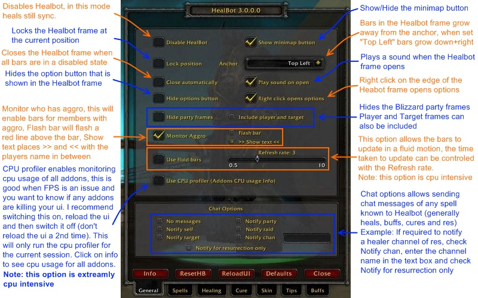
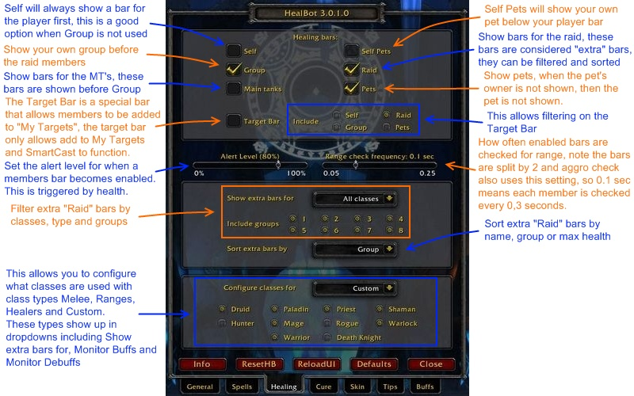
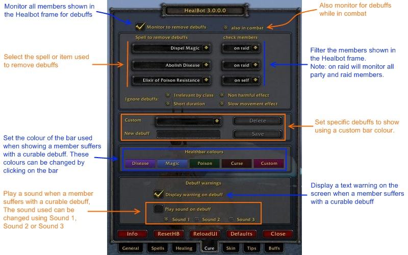
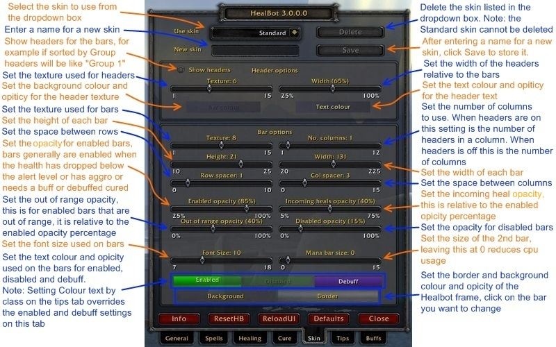
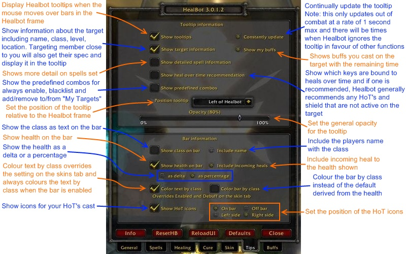
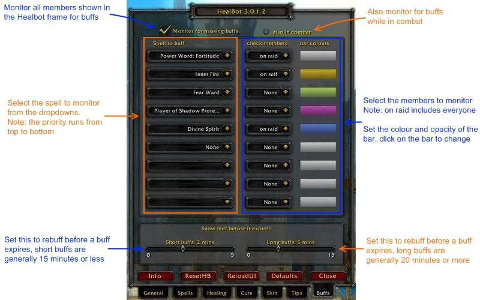
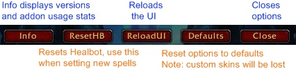

This guide was inspired by and dedicated to Chuppy of Wild Wolves
This guide is now maintained in HealBots WIKI
The following is now Out of Date.
Use the above link for the most current guide.
The General tab.

The Spells tab

The Healing tab

The Cure tab

The Skin tab

The Tips tab

The Buffs tab

The Buttons
